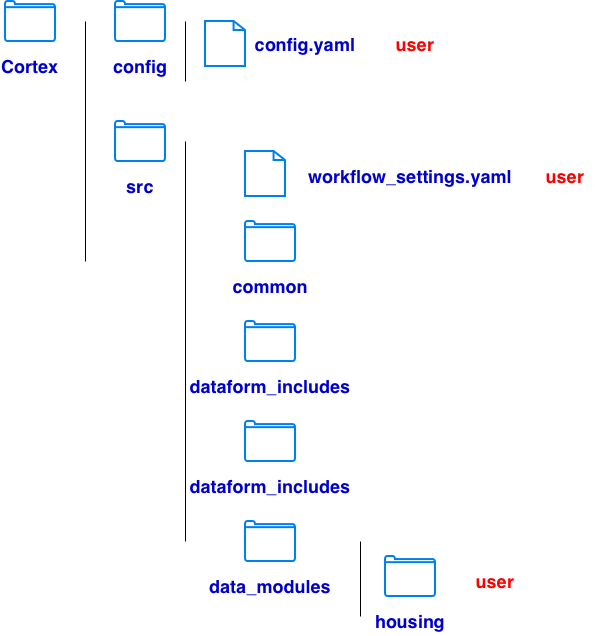
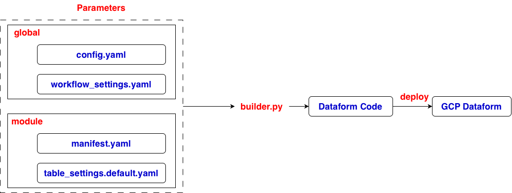

git clone https://github.com/GoogleCloudPlatform/cortex-framework.git

# src/common, contains the reusable Python infrastructure used by Cortex
# do not modify
# src/common/builder, built-in Python builders that generate Dataform artifacts
# src/common/clients, clients for interacting with Google Cloud APIs
# src/common/deployers, deploy generated code
# src/common/schemas, validate configuration structures
# scr/common/services, services for configuration, module discovery and other framework operations
# src/common/utils, provide general-purpose utilities
# src/tools, Cortex command-line operations
# do not modify
# src/dataform_includes, contains JavaScript intended for use when Dataform compiles SQLX or JavaScript definitions
# do not modify
# src/workflow_settings.yaml
# update it if its values don't match your Google Cloud environment
# src/data_modules, data transformation modules
# add user-defined modules
# src/data_modules/cortex, Google-provided data modules
# src/data_modules/cortex_samples/, sample modules demonstrating Cortex functionality
# src/data_modules/user_defined_module, user defined module
# config/config.yaml
# what to build and where to deploy it
# apply to entire Cortex project
# SECTION: buildEnvironment
buildProjectId # project id
# SECTION: data
bigQueryLocation # dataset location on BigQuery
namespaces # where Cortex finds the module code
name # module name
path # module path
datasets # BigQuery datasets
id # dataset id
projectId # project id of the dataset
datasetId: # dataset name
modules # modules to deploy
foundations # prepare and standardize source data
catalogs # register or integrate ataset metadata
products # create data tables
moduleId # module id
modulePath # module path in src/data_modules
dataTargetId # destination BigQuery dataset reference
# SECTION: deployment
targets
type: dataform
targetSettings
repositoryProjectId # project id of the Dataform repository
repositoryRegion # Dataform repository region
repositoryName # Dataform repository name
workspaceName # Dataform workspace name

# GCP login
gcloud auth login
gcloud auth application-default login
gcloud config set project data-508912
# enable apis
gcloud services enable bigquery.googleapis.com dataform.googleapis.com --project=data-508912
# build in root of project
uv run cortex-build --config config/config.yaml
# deploy to Dataform
uv run cortex-deploy --config config/config.yaml
# execution on Dataform